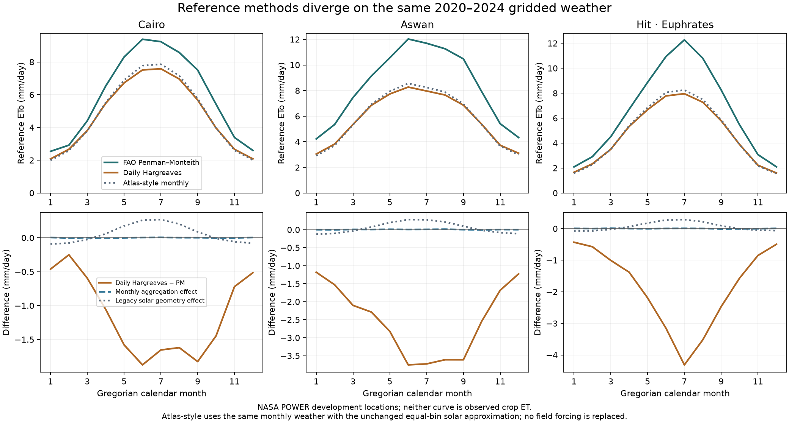

EARTH EVIDENCE · 14 NOVEMBER 2026
Two reference methods diverge on the same weather
On the declared 2020–2024 NASA POWER gridded weather, daily Hargreaves totals are 19–30% below FAO56 Penman–Monteith. This identifies a material forcing uncertainty. It is a reference-method comparison, not observed field evaporation or a calibrated harvest update.
Same weather, separate method and geometry effects
Both daily methods receive identical temperatures and FAO solar geometry at Cairo, Aswan and Hit. Penman–Monteith additionally uses supplied solar radiation, 2 m wind, pressure and dewpoint. All 5,481 requested dates pass the declared source checks; no dates are imputed or discarded.

The atlas-style line applies the unchanged monthly formula and solar approximation to the same modern monthly weather. It does not show the archived WorldClim field forcing and does not replace it. Bottom panels separate method, aggregation and solar geometry effects.
Five-year average annual totals
Totals are millimetres per year averaged across 2020–2024, including leap days. November–March ratios pool those Gregorian months; they are not the earlier equal-bin crop calendars. PM denotes the declared Penman–Monteith reference equation.
| Location | PM mm/year | Daily Hargreaves mm/year | Atlas-style mm/year | Daily Hargreaves / PM | Nov–Mar Hargreaves / PM | Valid days | Cloud-ratio clamp days |
|---|
| Cairo | 2,160 | 1,745 | 1,767 | 80.8% | 83.9% | 1827 | 14 |
| Aswan | 3,044 | 2,127 | 2,148 | 69.9% | 71.2% | 1827 | 156 |
| Hit · Euphrates | 2,381 | 1,710 | 1,735 | 71.8% | 77.1% | 1827 | 43 |
Every climatological month
Values below are mm/day. The method difference is daily Hargreaves minus PM. The aggregation effect compares Hargreaves on monthly mean weather with the average of daily Hargreaves; the geometry effect then applies the existing atlas solar approximation. Scroll horizontally for all values.
36 location-months
| Location | Month | PM | Daily Hargreaves | Atlas-style | Method difference | Aggregation effect | Geometry effect |
|---|
| Cairo | 1 | 2.541 | 2.079 | 1.993 | -0.462 | 0.006 | -0.092 |
| Cairo | 2 | 2.919 | 2.668 | 2.583 | -0.251 | -0.007 | -0.078 |
| Cairo | 3 | 4.407 | 3.811 | 3.785 | -0.596 | -0.000 | -0.025 |
| Cairo | 4 | 6.529 | 5.474 | 5.526 | -1.055 | -0.009 | 0.060 |
| Cairo | 5 | 8.300 | 6.721 | 6.893 | -1.579 | -0.003 | 0.175 |
| Cairo | 6 | 9.386 | 7.511 | 7.776 | -1.874 | 0.005 | 0.260 |
| Cairo | 7 | 9.237 | 7.583 | 7.858 | -1.654 | 0.007 | 0.268 |
| Cairo | 8 | 8.577 | 6.956 | 7.161 | -1.620 | 0.002 | 0.203 |
| Cairo | 9 | 7.502 | 5.676 | 5.764 | -1.826 | 0.001 | 0.087 |
| Cairo | 10 | 5.414 | 3.968 | 3.953 | -1.446 | -0.004 | -0.011 |
| Cairo | 11 | 3.389 | 2.669 | 2.605 | -0.720 | -0.005 | -0.058 |
| Cairo | 12 | 2.597 | 2.082 | 2.007 | -0.515 | 0.005 | -0.080 |
| Aswan | 1 | 4.221 | 3.040 | 2.915 | -1.181 | 0.000 | -0.125 |
| Aswan | 2 | 5.349 | 3.819 | 3.708 | -1.530 | -0.006 | -0.105 |
| Aswan | 3 | 7.458 | 5.355 | 5.328 | -2.102 | 0.008 | -0.035 |
| Aswan | 4 | 9.142 | 6.854 | 6.932 | -2.289 | 0.005 | 0.074 |
| Aswan | 5 | 10.558 | 7.734 | 7.941 | -2.824 | 0.011 | 0.196 |
| Aswan | 6 | 12.025 | 8.271 | 8.557 | -3.755 | 0.006 | 0.280 |
| Aswan | 7 | 11.694 | 7.966 | 8.250 | -3.728 | 0.008 | 0.275 |
| Aswan | 8 | 11.266 | 7.654 | 7.881 | -3.612 | 0.013 | 0.214 |
| Aswan | 9 | 10.473 | 6.860 | 6.959 | -3.613 | 0.001 | 0.098 |
| Aswan | 10 | 7.901 | 5.362 | 5.334 | -2.539 | -0.009 | -0.019 |
| Aswan | 11 | 5.411 | 3.728 | 3.651 | -1.683 | 0.004 | -0.082 |
| Aswan | 12 | 4.333 | 3.105 | 2.992 | -1.228 | 0.000 | -0.114 |
| Hit · Euphrates | 1 | 2.089 | 1.658 | 1.589 | -0.431 | 0.009 | -0.077 |
| Hit · Euphrates | 2 | 2.911 | 2.337 | 2.264 | -0.574 | -0.002 | -0.071 |
| Hit · Euphrates | 3 | 4.512 | 3.506 | 3.496 | -1.006 | 0.014 | -0.024 |
| Hit · Euphrates | 4 | 6.715 | 5.334 | 5.394 | -1.381 | -0.000 | 0.060 |
| Hit · Euphrates | 5 | 8.866 | 6.674 | 6.844 | -2.192 | -0.006 | 0.176 |
| Hit · Euphrates | 6 | 10.933 | 7.780 | 8.058 | -3.154 | 0.005 | 0.273 |
| Hit · Euphrates | 7 | 12.270 | 7.956 | 8.251 | -4.314 | 0.010 | 0.286 |
| Hit · Euphrates | 8 | 10.797 | 7.274 | 7.495 | -3.523 | 0.004 | 0.218 |
| Hit · Euphrates | 9 | 8.260 | 5.788 | 5.870 | -2.472 | -0.011 | 0.093 |
| Hit · Euphrates | 10 | 5.458 | 3.891 | 3.874 | -1.568 | -0.008 | -0.009 |
| Hit · Euphrates | 11 | 3.075 | 2.226 | 2.172 | -0.849 | -0.005 | -0.049 |
| Hit · Euphrates | 12 | 2.101 | 1.605 | 1.550 | -0.497 | 0.009 | -0.064 |
Inputs and approximation limits
NASA POWER provides MERRA2/SYN1DEG/POWER gridded products, not station observations or ancient weather. Grid elevations are 135.44 m at Cairo, 253.64 m at Aswan and 79.59 m at Hit. API coordinates name development locations; they are not surveyed station elevations. The API returns solar radiation in MJ/m²/day here, so no kWh conversion is applied.
The daily grass-reference calculation uses albedo 0.23 and soil heat flux zero. Actual vapour pressure comes from daily mean dewpoint. Its empirical longwave cloud ratio is bounded to 0.3–1; 213 days trigger that declared bound, including 156 at Aswan. No negative raw daily ETo occurs. All intermediates and raw source values are retained.
The current atlas solar function uses equal climate-bin midpoints and a circular-orbit approximation, without the Earth–Sun distance factor in FAO geometry. Its difference also includes the phase/bin convention. This audit quantifies the combined geometry effect and leaves the existing function unchanged.
Daily mean relative humidity is not daily minimum relative humidity. It cannot directly supply FAO Equation 70's crop-coefficient climate adjustment. The audit does not qualify local phenology, basal diffusion versus root uptake, canopy/root development or drainage.
Independent checks and complete inputs
159 controls pass. Before weather ETo was calculated, FAO Example 18 reproduced its rounded 3.9 mm/day, Example 8 its 32.2 MJ/m²/day, and 1,000 synthetic weather days agreed with an independent scalar/Decimal reference. The weather review checks all 98,658 daily numeric cells, 180 site-year-month rows, 15 annual rows and 36 climatological rows. Two fresh numeric exports reproduce byte for byte; 920 protected files remain unchanged.
Declared protocol · Frozen source receipt · Preflight controls · Results and all aggregates · Independent review/replay · All 5,481 daily rows (CSV) · Raw Cairo weather · Raw Aswan weather · Raw Hit weather
Source methods: FAO56 Chapter 2, Equation 6, Chapter 3, weather inputs and Equation 52, Chapter 4, Example 18, and NASA POWER. The frozen protocol's Equation 52 chapter locator is corrected in the results metadata; both chapters were pinned from the outset.
What this changes in the work queue
The earlier water-adequacy results remain conditional on their evaporation forcing. Neither a site multiplier nor a preferred crop calendar is adopted. A later regional forcing comparison needs a declared spatial weather/reference policy and qualification of humidity, wind, radiation, period and grid representativeness, followed by matched field controls and independent evidence.
All three locations are development. This comparison does not demonstrate ancient reference evaporation, measured crop ET, regional harvest non-inflation or whole-empire calibration. Tigris/shared Earth-fantasy flow and independent regions remain open. Release-3 settlements and marketed share 0.3923 remain current; Egypt calibration still fails.